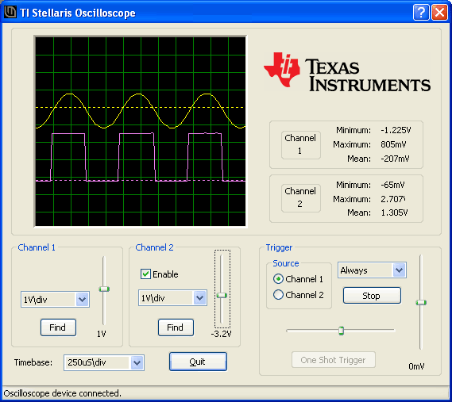

LMScope is a Windows companion application to the Stellaris® "qs-scope"oscilloscope application. When connected via USB to a Stellaris evaluation kit running the oscilloscope application, LMScope offers full remote control of the oscilloscope with local display of captured waveforms on the Windows PC. Waveforms may be saved as Windows bitmap files and the raw sample data saved in comma separated value (CSV) format suitable for import to spreadsheets such as Microsoft Excel or OpenOffice.org Calc.
The application is supported on 32 bit WindowsXP and Vista systems. Support on earlier versions of Windows is not available since the application uses the WinUSB interface which was introduced on WindowsXP.
Help is available for the following topics:
